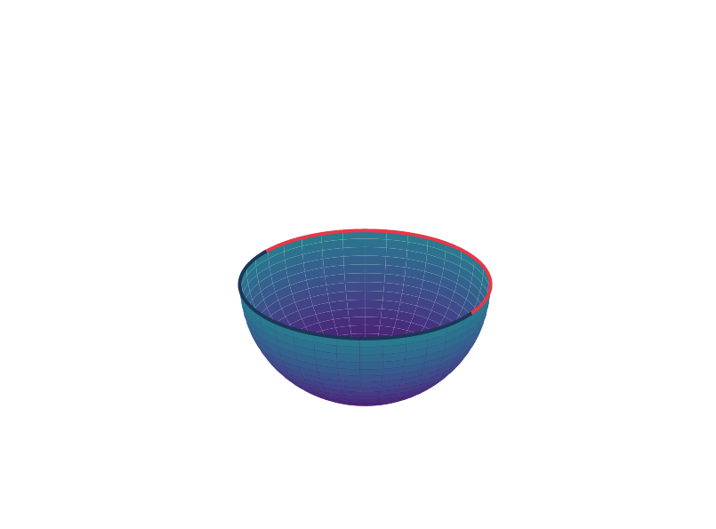

Tangent vectors/Differential of map between manifolds
We will extend to differentiable manifolds the local differential calculus that holds for \(\mathbf{R}^n\). From now on, when we denote a differentiable manifold by \(M^n\), the upper index \(n\) will denote the dimension of \(M=M^n\).
Definition 1
Let \(M_1^n\) and \(M_2^n\) be differentiable manifolds. A map \(\varphi:M_1\rightarrow M_2\) is differentiable at a point \(p\in M_1\) if given a parametrization \(g:\mathbf{R}^m\supset V\rightarrow M_2\) around \(\varphi(p)\), there exists a parametrization \(f:\mathbf{R}^n\supset U\rightarrow M_1\) around \(p\) such that \(\varphi(f(U))\subset g(V)\) and the map \[ g^{-1}\circ \varphi \circ f:\mathbf{R}^n\supset U\rightarrow \mathbf{R}^m \] is differentiable at \(f^{-1}(p)\). The map \(\varphi\) is differentiable in an open set of \(M_1\) if it is differentiable at all points of the set.
The map \(g^{-1}\circ \varphi \circ f\) is the expression of \(\varphi\) in the parametrizations \(f\) and \(g\);clearly the fact that \(\varphi\) is differentiable does not depend on the choice of parametrizations.
In particular, it follows from the above that we can talk about differentiable functions (\(\varphi:M^n\rightarrow \mathbf{R}\)) and differentiable curves (\(\psi:\mathbf{R}\supset I\rightarrow M^n\)) on a differentiable manifold (\(I\subset \mathbf{R}\) will always denote an open interval of the real line containing the origin);i.e. for any point \(\psi(p)\) on the curve and any parametrization around it \((U,f):\psi(p)\in f(U)\) the composition \(f^{-1}\circ \psi\) is differentiable at \(p\).
Now we would like to define the notion of a tangent vector to a differentiable curve on a differentiable manifold.
Definition 2
Let \(\alpha:I\rightarrow M\) be a differentiable curve on a differentiable manifold \(M\), with \(\alpha(0)=p\in M\), and let \(D\) be the set of functions of \(M\) which are differentiable at \(p\). The tangent vector to the curve at \(p\) is the map, denoted by \(\alpha^{\prime}(0):D\rightarrow \mathbf{R}\), given by \[ \alpha^\prime(0)\varphi=\frac{d}{dt}(\varphi\circ\alpha)\vert_{t=0}, \qquad \varphi\in D. \] A tangent vector at \(p\in M\) is the tangent vector of some differentiable curve \(\alpha:I\rightarrow M\) with \(\alpha(0)=p\).
We want to show that the set of tangent vectors at a point \(p\in M^n\) makes up an \(n\)-dimensional real vector space.
For that, choose a parametrization \(f:U\subset \mathbf{R}^n\rightarrow M^n\) around \(p=f(0,\dots,0)\). Let \(\alpha^{\prime}(0)\) be a tangent vector at \(p\) which is tangent to \(\alpha:I\rightarrow M^n\) with \(\alpha(0)=p\). Let \(D\) be the set of functions of \(M\) which are differentiable at \(p\) and let \(\varphi\in D\) be any function in the set. Denote \(f^{-1}\circ\alpha\) by \((x_1(t),\dots,x_n(t))\) and \(\varphi\circ f\) by \(\varphi_f\). By definition of \(\alpha^\prime(0)\), we have: \[ \begin{aligned} \alpha^\prime(0)\varphi&=\frac{d}{dt}(\varphi\circ\alpha)\vert_{t=0}=\frac{d}{dt}((\varphi\circ f)\circ(f^{-1}\circ\alpha))\vert_{t=0} \\ &=\frac{d}{dt}(\varphi_f \circ(k_1(t),\dots,k_n(t)))\vert_{t=0}\\ &=\sum_{i=1}^n \varphi_f^{i}\cdot\frac{dk_i}{dt}\vert_{t=0} \qquad \text{where } \varphi_f^i \text{ denotes the i'th partial derivative of } \varphi_f \text{ at the origin} \\ \end{aligned} \]
Write \((-)_f^i\) in the form \(\frac{\partial}{\partial x_i}\vert_0\) where we omit \(f\).
Notice that \(\frac{\partial}{\partial x_i}\vert_0\) is the tangent vector to the coordinate curve at \(p\); i.e. \[ \frac{\partial(\varphi\circ f)}{\partial x_i}\equiv\alpha_i^\prime(0)(\varphi) \qquad \text{where }\alpha_i \text{ is the coordinate curve } x_i\rightarrow f(0,\dots,x_i,\dots,0),\, x_i\in \pi_i(U) \]
This is straightforward for \[ \alpha_i^\prime(0)(\varphi)=\frac{d}{dt}(\varphi\circ \alpha_i)\vert_0=\frac{\partial (\varphi\circ f)}{\partial x_i}. \]
Now we denote by \(T_fM\) the vector space spanned by \(\{\frac{\partial}{\partial x_i}\vert_0\}\) (depends on the parametrization \(f\)).
Indeed we note that the set \(T_pM\) of all tangent vectors at \(p\) is exactly the vector space \(T_fM\).
Lemma 1
\(T_fM=T_pM\)
Proof. Clearly \(T_pM\subseteq T_fM\) as \(\alpha^\prime(0)\in T_pM\) implies that it can be written as a linear combination of \(\{\frac{\partial}{\partial x_i}\vert_0\}\).
We show the reverse inclusion; Let \(v\in T_fM\), then \(v=\sum \lambda_i (\frac{\partial}{\partial x_i})_0\); let \(\alpha:I\rightarrow M\) be the following differentiable curve on \(M\): \[ \alpha:t\rightarrow f(\lambda_1t,\dots,\lambda_nt) \] Then \(\alpha^\prime(0)=v\); which completes the proof.
It follows that \(T_pM\) is a vector space. Furthermore, the choice of a parametrization \(f\) determines a basis \(\{(\frac{\partial}{\partial x_i})\vert_0\}\) for \(T_pM\). Thus \(T_pM\) is an \(n\)-dimensional vector space which is called the tangent space of \(M\) at \(p\). The basis \(\{(\frac{\partial}{\partial x_i})\vert_0\}\) is called the associated basis to the parametrization \(f\).
With the notion of a tangent space we can define the notions of a differential of a map \(\varphi:M_1^n\rightarrow M_2^m\).
Definition 3
Let \(M_1^n\) and \(M_2^m\) be differentiable manifolds and let \(\varphi:M_1\rightarrow M_2\) be a differentiable map. For each \(p\in M\), the differential of \(\varphi\) at \(p\) is the linear map \((d\varphi)_p:T_pM_1\rightarrow T_{\varphi(p)}M_2\) which associates to each \(v\in T_pM_1\) the vector \((d\varphi)_p(V)\in T_{\varphi(p)}M_2\) defined as follows: Choose a differentiable curve \(\alpha:(-\epsilon,\epsilon)\rightarrow M_1\), with \(\alpha(0)=p,\alpha^\prime(0)=v\); then \((d\varphi)_p(v)=(\varphi\circ\alpha)^\prime(0)\).
For the definiton to make sense, it’s necessary to show that \((\varphi\circ\alpha)^\prime(0)\) does not depend on the choice of \(\alpha\) and that \((d\varphi)_p\) is in fact a linear map. This is proved by taking parametrizations around \(p\) and \(\varphi(p)\) thus reducing to the case of a map from \(\mathbf{R}^n\) to \(\mathbf{R}^m\), where the properties are well known.
Proposition 2
Let \(\varphi\) be a differentiable map from a manifold \(M_1\) into a manifold \(M_2\). If \(f\) is a differentiable function defined in a neighborhood of \(\varphi(p)\) (\(p\in M\)), then \(\varphi^*(f)=f\circ \varphi\) is a differentiable function defined in a neighborhood of \(p\). For \(v\in T_pM_1\), we have the charaterization of the differential: \[ (d\varphi)_p(v)(-)=v(\varphi^*(-)) \]
Sometimes we denote a differential by \((\varphi_*)_p\) to bring out this charaterization.
Proof. Let \(v=\alpha^\prime(0)\) and \(f\) is a differentiable function in a neighborhood of \(\varphi(p)\). Then \(\varphi^* f\) is a differentiable function in a neighborhood of \(p\); thus \(v(\varphi^*f)=\frac{d}{dt}(\varphi^*f\circ \alpha)\vert_{t=0}\); therefore we have \(v(\varphi^*(-))=(d\varphi)_p(v)(-)\)
Proposition 3
Let \(M\) and \(N\) be differentiable manifolds and \(p\in M\) and \(\varphi:M\rightarrow N\) be a differentiable map. Let \(f:\mathbf{R}^n\supset U\rightarrow M\) be a coordinate neighbourhood of \(p\) and \(g:\mathbf{R}^m\supset V\rightarrow N\) be a coordinate system of \(\varphi(p)\) such that \(g^{-1}\circ \varphi \circ f\) is a differentiable map. Let \(\{(\frac{\partial}{\partial x_i})_0\}\) be the basis of \(T_pM\) w.r.t the parametrization \(f\) and \(\{(\frac{\partial}{\partial y_j})_0\}\) be the basis of \(T_{\varphi(p)}N\) w.r.t the parametrization \(g\). Then \((d\varphi)_p\) admits the form in matrix (w.r.t the bases we choose before): \[ \begin{bmatrix} \displaystyle\frac{\partial \varphi_1}{\partial x_1}& \dots& \displaystyle\frac{\partial \varphi_1}{\partial x_n} \\ \vdots &\ddots &\vdots \\ \displaystyle\frac{\partial \varphi_m}{\partial x_1} &\cdots& \displaystyle\frac{\partial \varphi_m}{\partial x_n} \end{bmatrix} \] where \((\varphi_1,\dots,\varphi_m)=g^{-1}\circ \varphi \circ f\).
The proof is clear.
Definition 4: diffeomorphism/local diffeomorphism
Let \(M_1\) and \(M_2\) be differentiable manifolds. A map \(\varphi:M_1\rightarrow M_2\) is a diffeomorphism if it is differentiable, bijective, and its inverse \(\varphi^{-1}\) is also differentiable.
The map is a local diffeomorphism at \(p\in M\) if there exist neighborhood \(U\) of \(p\) and \(V\) of \(\varphi(p)\) such that \(\varphi\restriction_U:U\rightarrow V\) is a diffeomorphism.
The linear map \((d\varphi)_p\) may be thought as a first order approximation of the map \(\varphi\) around \(p\). Probably the most important theorem in calculus is the inverse function therom which states that if \((d\varphi)_p\) is an isomorphism (locally) then \(\varphi\) is a local diffeomorphism at \(p\). Being a local theorem, it extends immediately to differentiable manifolds.
Theorem 4: Inverse function theorem on manifold
Let \(M_1\) and \(M_2\) be differentiable manifolds and \(x\in M_1\);let \(f:M_1\rightarrow M_2\) be a differentiable mapping. Suppose that \((df)_x；T_xM_1\rightarrow T_{f(x)}M_2\) is nonsingular (i.e. linear isomorphism), then there eixts a neighborhood of \(x\in U\subset M_1\) such that \(f\restriction_U:U\rightarrow f(U)\subset M_2\) is a diffeomorphism.
Let us consider a potentially confusing example.
Example 5
Let \(\mathbf{R}\) be equipped with the standard atlas; i.e. the atlas containing \((\mathbf{R},\operatorname{id})\); Let \(\tilde{\mathbf{R}}\) be a copy of the real line but we will define a new differentiable structure \((\mathbf{R},f)\) where \(f:\mathbf{R}\rightarrow \tilde{\mathbf{R}}; \quad x\mapsto x^{1/3}\) (carefully check that it’s a differentiable structure (non-maxiaml); since its inverse \(x \mapsto x^3\) is differentiable). Notice that \((\mathbf{R},f)\) is not in the standard atlas as \(\operatorname{id}^{-1}\circ f=x^{1/3}\) is not smooth. But \(f:x\mapsto x^{1/3}\) is a differentiable mapping between the two manifolds, for \((x^{1/3})^{-1}\circ f \circ \operatorname{id}=\operatorname{id}\) is a differentiable function. Indeed it’s a diffeomorphism as \(\operatorname{id}^{-1}\circ f^{-1}\circ f\) is a differentiable function.
The conclusion of this very boring example is that: \(x^{1/3}\) is not differentiable when it’s treated as real-valued function; but it’s differentiable, even diffeomorphic, when treated as a mapping between manifolds. This is a tricky point, because we often mix up words like mapping and function in some settings (like the example above). But usually we won’t hit this kind of boring-but-annoying thing again (What? \(x^{1/3}\) is smooth!). So we’re bothering to explain it, even though it looks kind of dumb.
In fact it’s easy to observe that the parametrizations are all diffeomorphisms when we view them as mappings between manifolds like the example above (\(\mathbf{R}^n\) always takes the standard differentiable structure).
And conversely, every diffeomorphism of an open subset of a manifold with an open subset of a Euclidean space can serve as a parametrization.
Proposition 5
If \((U,\varphi)\) is a coordinate system on a manifold \(M\) of dimension \(n\), then the parametrization \(\varphi:U\rightarrow\varphi(U)\subset M\) is a diffeomorphism (here we suppose that \(\mathbf{R}^n\) is equipped with the standard differentiable structue;i.e. the maximal atlas containing \((\mathbf{R}^n,\operatorname{id})\)).
Proof. By definition, \(\varphi\) is a homeomorphism, so it suffices to check that both \(\varphi\) and \(\varphi^{-1}\) are differentiable. To test the smoothness of \(\varphi\), we use the atlas \(\{(U,\operatorname{id})\}\) with a single chart on \(U\) and the atlas \(\{(U,\varphi)\}\) with a single chart on \(\varphi(U)\). Since \(\varphi^{-1}\circ \varphi \circ \operatorname{id}:U\rightarrow U\) is just the identity map, it is differentiable.
Proposition 6
Let \(U\) be an open subset of \(\mathbf{R}^n\) and \(M\) be a differentiable manifold with a differentiable structure \(\mathcal{A}\). Suppose that there is a diffeomorphism \(f\) from \(U\) onto an open subset \(f(U)\) of \(M\), then \((U,f)\) is a chart in the differentiable structure of \(M\).
Proof. For any chart \((U_\alpha,\phi_\alpha)\in\mathcal{A}\), both \(\phi_\alpha\) and \(\phi_\alpha^{-1}\) are differentiable by the proposition 5. As composites of differentiable maps, both \(f^{-1}\circ \phi_\alpha\) and \(\phi_\alpha^{-1}\circ f\) are differentiable. Hence, \((U,f)\in\mathcal{A}\) due to the maximality of the atlas.
Definition 6: immersion/embedding
Let \(M^m\) and \(N^n\) be differentiable manifolds. A differentiable map \(\varphi:M\rightarrow N\) is an immersion if \((d\varphi)_p:T_pM\rightarrow T_{\varphi{(p)}}N\) is injective for all \(p\in M\) (i.e. the rank of linear mapping is equal to \(\operatorname{dim} T_pM=\operatorname{dim} M\)). If, in addition, \(\varphi\) is a homeomorphism onto \(\varphi(M)\subset N\), where \(\varphi(M)\) has the topology induced by \(N\), \(\varphi\) is an embedding. If \(M\subset N\) and the inclusion \(i:M\subset M\) is an embedding, we say that \(M\) is a submanifold of \(N\).
To verify that \(\varphi:\mathbf{R}^1\supset I\rightarrow \mathbf{R}^n\) is an immersion it is necessary to check that the Jacobian has rank \(1\) at every point of \(I\), i.e. one of the derivatives with respect to \(t\) is different from zero for every value of \(t\) where the mapping \(\varphi\) is defined.
Example 7
The curve \(\varphi:\mathbf{R}^1\rightarrow \mathbf{R}^2\) given by \(\varphi(t)=(t^3,t^2)\) is a differentiable map but not an immersion.
Proof. We have \((\varphi\circ \alpha)^\prime(0) f=(f\circ \varphi\circ\alpha)^\prime(0)=(f\circ \varphi)^\prime_{0}\alpha^\prime_0\).
It follows that \((f\circ \varphi)^\prime(0)=\frac{\partial f}{\partial x_1}_{(0,0)}\varphi_1^\prime(0)+\frac{\partial f}{\partial x_2}_{(0,0)}\varphi_2^\prime(0)=0\) where \(f\) is a differentiable function at the point \(\varphi(0)=(\varphi_1(0),\varphi_2(0))\).
Consider the tangent vectors at \(0\),\(\alpha_1:(-\epsilon,+\epsilon)\rightarrow \mathbf{R}^1;s\mapsto 0\) and \(\alpha_2:(-\epsilon,+\epsilon)\rightarrow \mathbf{R}^1;s\mapsto s\); clearly they are different in \(T_0M\); but they are the same tangent vector in \(T_{(0,0)}N\) as they have the entirely same action on the differentiable functions at \((0,0)\); i.e. they sends each function differentiable functions at \((0,0)\) to \(0\).
Thus \(T_0M\xrightarrow{(d\varphi)_0}T_{(0,0)}N\) is not an injective map; then not an immersion.
Or more easily, we observe the matrix of the differential: \[ \begin{bmatrix} 3t^2\\ 2t \end{bmatrix} \] then we have the rank is \(0\) when \(t=0\); thus \(\varphi\) is not an immersion.
Example 8
The curve \(\varphi(t)=(t^3-4t,t^2-4)\) is an immersion that is not an embedding, since it has a self-intersection at \((0,0)\) (for \(t=2,t=-2\)).
Proof. The matrix of differential map is as follows: \[ \begin{bmatrix} 3t^2-4 \\ 2t \end{bmatrix} \] the rank is always \(1\); then \(\displaystyle(d\varphi)_p\) is injective. But \(\varphi(2)=\varphi(-2)\), \(\varphi\) is not an injection thus not homeomorphism.
Example 9
\(\varphi:\mathbf{R}^1\rightarrow \mathbf{R}^2\) is given by \(t\mapsto (\sin 2\pi t,\,\cos 2\pi t)\). It’s easy to check it’s an immersion as \(\cos x,-\sin x\) cannot be zero at the same time. Notice that the image of this immersion is the unit circle on the plane:\(\{(x_1,x_2)\in\mathbf{R}^2:x_1^2+x_2^2=1\}\).
Example 10
\(\varphi:(1,+\infty)\rightarrow \mathbf{R}^2\) is given by \(t\mapsto (\frac{\cos 2\pi t}{t},\frac{\sin 2\pi t}{t})\) whose image is a curve spiraling to \((0,0)\) when \(t\to +\infty\) and tending to \((1,0)\) as \(t\to 1\).
Example 11
Change the parameter such that the curve spirals to a circle with center at origin and radius of \(\frac{1}{2}\): \(\varphi:(1,+\infty)\rightarrow \mathbf{R}^2\) which is given by: \[ t\mapsto (\frac{t+1}{2t}\cos 2\pi t,\frac{t+1}{2t}\sin 2\pi t). \]
Example 12
\(\varphi:\mathbf{R}^1\rightarrow \mathbf{R}^2\) is given by \(t\mapsto (2\cos(t-\frac{\pi}{2}),\sin(2(t-\frac{\pi}{2})))\). The image is a “figure eight”.
Example 13
Change the parameter in the example before such that we obtain a curve which passes through the origin only once when \(t=0\) and tends to the origin as \(t\to\pm \infty\). Let \(\varphi\) be given as follows: \[ \begin{aligned} &t\mapsto (2\cos(g(t)-\frac{\pi}{2}),\sin(2(g(t)-\frac{\pi}{2})))\\ &\text{where } g(t) \text{ is a monotone increasing differentiable function such that}\\ &g(0)=\pi,\lim_{t\to-\infty}g(t)=0,\lim_{t\to +\infty}g(t)=2\pi \end{aligned} \] For instance, we can take \(g(t)=\pi+2\arctan t,\quad t\in(-\infty,+\infty)\).
Example 14
Set \(F:\mathbf{R}\rightarrow \mathbf{R}^2\) given by \[ F(t)= \begin{cases} (\frac{1}{t},\sin \pi t) \qquad 1\leq t<\infty\\ \text{ a regular curve} \qquad -1<t<1\\ (0,t+2) \qquad t\leq -1 \end{cases} \] where the regular curve connected the two pieces smoothly such that \(F\) is an immersion. In the topology of \(\mathbf{R}^2\), a neighborhood of a point \(p\) in the vertical part of the curve has infinitely many connected components, where as in the topology induced by \(F\) it is a connected interval. This is a useful example to keep in mind.
Remark. We may draw some conclusions through the above examples about the nature of immersion.
An immersion need not to be a one-to-one(injective) map, like the example 7, example 8 and example 11.
Even through an immerison can be an one-to-one and continuous mapping onto its image, it need not to be a homeomorphism which requires it has a continuos inverse, like the example 12 and example 13, where the image is not locally connected.
There examples lead to a more restrictive concept—embedding (wirte imbedding sometimes) as we just have defined.
Example 15: The projective plane revisited
The set of straight lines of \(\mathbf{R}^3\) that pass through the origin may be looked upon as the quotient space of the unit sphere \(S^2=\{p\in \mathbf{R}^3:|p|=1\}\) by the equivalence relation that identifies \(p\) with the antipodal point \(-p\). For each line through the origin in \(S^2\) determines two antipodal points, and the correspondence thus obtained is bijective.
Taking this into account, let us introduce another differentiable structure in \(P^2(\mathbf{R})\). For that notice that we cover the regular surface \(S^2\subset \mathbf{R}^3\) by a family of parametrizations: \[ f_i^+:U_i\rightarrow S^2, \qquad f_i^-:U_i\rightarrow S^2, i=1,2,3 \] where \[ \begin{aligned} &U_1=\{(x_1,x_2,x_3)\in \mathbf{R}^3:x_1=0,x_2^2+x_3^2<1\} \\ &f_1^+(x_2,x_3)=(+\sqrt{1-(x_2^2+x_3^2)},x_2,x_3);\\ &f_1^-(x_2,x_3)=(-\sqrt{1-(x_2^2+x_3^2)},x_2,x_3). \end{aligned} \] and similarily for \(i=2,3\). It is immediate to check that this is in fact a differentiable structure for \(S^2\)(see the Example and use the result about change of parameters).
Let \(\pi:S^2\rightarrow P^2(\mathbf{R})\) be the canonical projection, that is, \(\pi(p)=\{p,-p\}\) and notice that \(\pi(f_i^+(U_i))=\pi(f_i^-(U_i))\). We will define \(g_i:U_i\rightarrow P^2(\mathbf{R})\) by \[ g_i=\pi\circ f_i^+ \] Since the restriction of \(\pi\) to \(f_i^+(U_i)\) is injective, we obtain that \[ g_i^{-1}\circ g_j=(\pi\circ f_i^+)^{-1}\circ (\pi\circ f_j^+)=(f_i^+)^{-1}\circ (f_j^+). \]
It follows that \(g_i^{-1}\circ g_j\) is differentiable for all \(i,j=1,2,3\), hence \(\{(U_i,g_i)\}\) is a differentiable structure for \(P^2(\mathbf{R})\).
Actually the above structure and that of example before will determine the same maxiaml structure. For the coordinate neightborhoods are the same and the diffeomorphism is given by \[ [(1,\frac{x_2}{x_1},\frac{x_3}{x_1})] \leftrightarrow [(+\sqrt{1-x_2^2-x_3^2},x_2,x_3)]. \]
Remark (Crossed-cap). We give an animation which visualizes the process of sewing the bowl continuously; i.e. the image of \(P(\mathbf{R}^2)\) in \(\mathbf{R}^3\) under a differentiable mapping (singular thus not an immersion), since \[ \{S^2/\sim \xrightarrow{\tilde{f}} \mathbf{R}^3\} \leftrightarrows \{S^2\xrightarrow{f} \mathbf{R}^3:f(A)=f(B) \quad \text{when } A\sim B\}. \] The surface we obtained may be called crossed-cap. And notice that it has a self-intersection line where different points on the circle pass at different time.

Example 16: Immersion of the projective plane in \(\mathbf{R}^4\)
Let \(\varphi:\mathbf{R}^3\rightarrow \mathbf{R}^4\) be the map given by \[ \varphi(x,y,z)=(x^2-y^2,xy,xz,yz),\quad (x,y,z)\in \mathbf{R}^3 \] Let \(S^2\subset \mathbf{R}^3\) be the unit sphere and let \(\pi:S^2\rightarrow P^2(\mathbf{R})\) be the canonical projection of \(S^2\) onto the real projective plane (i.e. \((x,y,z)\rightarrow [(x,y,z)]\)). Notice that \(\varphi(p)=\varphi(-p)\), and define a map \(\theta:P^2(\mathbf{R})\rightarrow \mathbf{R}^4\) by \[ \theta([p])=\theta(\{p,-p\})=\varphi(p). \] Since \(\pi\) is a local diffeomorphism (as restriction of it to the half sphere (without boundary) is injective), to show that \(\theta\) is an immersion, it suffices to show that the restriction of \(\varphi\) to the sphere \(S^2\) is an immersion. To see that, choose the parametrization of \(S^2\) given in the example. Then \(f_3^+\), for instance, is given by \[ f_3^+(x,y)=(x,y,+\sqrt{1-(x^2+y^2)})=(x,y,D) \] and \[ \varphi\circ f_3^+(x,y,z)=(x^2-y^2,xy,xD,yD). \] To show that \(d(\varphi\circ f_3^+)\) is injective, it suffices to show that the rank of the matrix (by proposition) \[ \begin{bmatrix} 2x & y & D+xD_x & yD_x \\ -2y & x & xD_y & D+yD_y \end{bmatrix} \] is equal to two at each point of \(\{(x_1,x_2,x_3)\in \mathbf{R}^3:x_3=0,x_1^2+x_2^2<1\}\), and this is easily checked (by its Jacobian determinants). Similarily, we can check that the same holds for all other parametrizations and this completes the example.